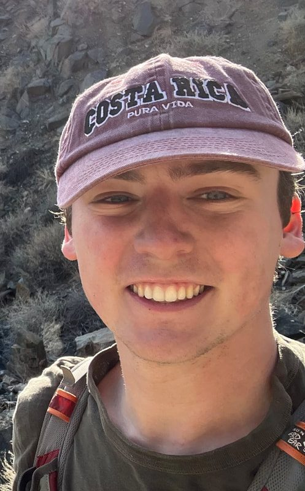
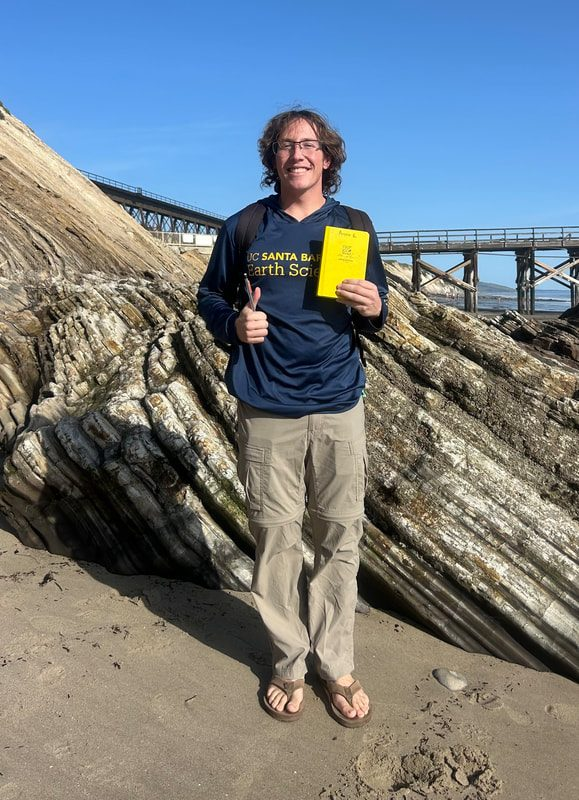
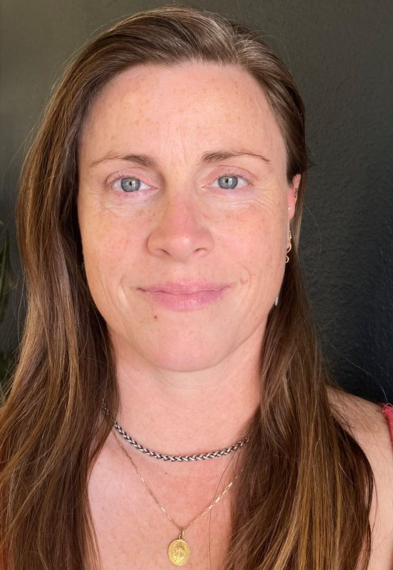
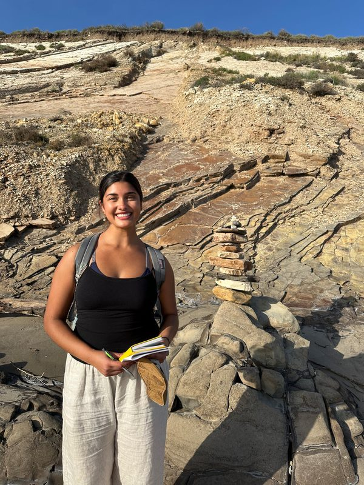
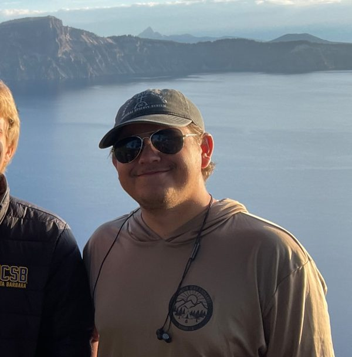

People
John M. Cottle
Professor of Geology, Department of Earth Science and Earth Research Institute
Faculty Director, UCSB Natural Reserve System
University of California, Santa Barbara, CA 93106-9630
Tel: (805) 893-7315 · cottle@geol.ucsb.edu
D.Phil., University of Oxford, 2008
M.Sc., University of Otago, 2002
B.Sc., University of Otago, 2000
We are always looking for people to join our group. If any of the projects on the Research page interest you, get in touch.
Current group members

Ph.D., Himalayan Tectonics

Ph.D., Basin and Range Tectonics

Ph.D., Ocean Island Geochronology

M.Sc., Rare Earth Element Mineralization in Nevada
Undergraduate researchers

Austin Gessini
Undergraduate researcher

Sarah Kreitzer-Lillard
Undergraduate researcher

Adrianna Martinez
Undergraduate researcher

Marcus O'Connor
Undergraduate researcher
Past group members
Postdoctoral scholars
- Purbajyoti Phukon Fulbright Postdoctoral Scholar.
- Erin Shea Postdoctoral Scholar.
- Catherine Mottram Fulbright Postdoctoral Scholar, 2014 to 2015.
- Dawn Kellett Postdoctoral Scholar.
- Demian Nelson Ph.D. student and postdoctoral fellow.
Ph.D.
- Francisco Apen Thermochronology of the lower crust.
- Alex Johnson Geochronology of metamorphic rocks from the Himalaya. Alex passed away in 2021 and was awarded a posthumous Ph.D. Tributes: fundraiser page and Daily Nexus.
- Elizabeth Erickson Geochronology of granitoids from Northern Victoria Land, Antarctica.
- Sophie Briggs Magmatic and metamorphic evolution of the Southern Alps, New Zealand.
- Janelle McAtamney Structural and thermochronologic evolution of the Main Central Thrust, Nepal.
- Graham Hagen-Peter 2015, Magmatic evolution of the southern Victoria Land segment of the Ross Orogen, from U-Pb and Hf isotopes.
- Graham Lederer 2015, Petrochronology of crustal anatexis in the Leo Pargil Dome, NW India.
- Nicolas Piette-Lauzière Visiting Ph.D. student from UBC Okanagan.
M.Sc.
- Lindsay Buff Carbonatite magmatism in Tanzania.
- Nicoletta Browne Geochemistry of Granite Harbor Intrusives, Antarctica.
- Carina Edelman Geochronology of REE-bearing rocks in Colorado.
- Jacob Poletti 2015, Petrogenesis of the Mountain Pass Intrusive Suite.
- Tyson McKinney 2014, Rare earth element mineralization in Joshua Tree National Park.
- Bryan Norman 2013.
- Amanda Willingham 2012, Time-scales of melt generation and migration in the Ama Drime Massif, Southern Tibet.
Graduate laboratory assistants
Isabella Welch, Caroline Newell
Undergraduate researchers and assistants
Sandy Schwarzbart, James Delehanty, Dylan Schroeder, Aliyah Sarna, Melia Ochoa, Layia Asakawa-Ekeland, Ted Brown, Aran Mazariegos, Nicole Aikin, Erin Solloway, Valeria Jaramillo Hernandez, Sarah Grimes, Riley Rohrer, Josh Franck, Josh Hoeflich, Daniel Torres, Kayla Leal, Charu Garapaty, Adam Kershner, Bettie Coy, CJ Lemler, Elisa Medri, Gin Li, Chris Strong, Nikki Arnush, Mason Gonzalez, Michelle Carter, Haley Perry, Keith Chancey, Michael Truong, Elizabeth Spacone, Matthew Mazzoni, Tou Xiong, Paige Granneman, Nolan Blackford, Kyle Moulton, Jason Schmidt, Justin LaForge, Camille Collett, Robert Maksimow, Christie Villanueva